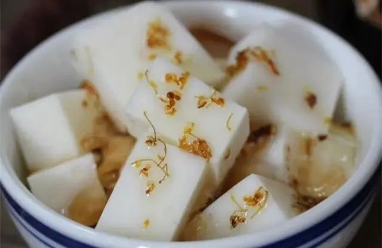

甜品食谱
Dessert Recipes

杏仁豆腐
食材:
南杏50克、琼脂15克、纯牛奶250ml、清水250ml、糖桂花适量、细砂糖50克。
做法
- 1、南杏用清水浸泡2小时；
- 2、南杏放入豆浆机，加入750ml凉水，250ml纯牛奶，50克细砂糖，打成浆；
- 3、用筛子过滤掉杏仁渣；
- 4、过滤好的杏仁浆倒入不锈钢锅，加入15克琼脂，一直大火煮，煮到琼脂完全溶解即可
- 5、煮好的杏仁浆倒入模具中冷却，放入冰箱冷藏；
- 6、冷藏好的杏仁切块，装盘，淋上糖桂花即可食用；
Made by Mao Jingnan, Beijing Foreign Studies University